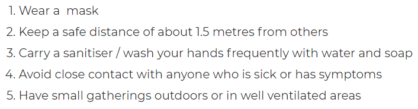

Corona prevention methhods Page
Links:
Can COVID-19 be prevented?
The U.S. Food and Drug Administration (FDA) has given emergency use authorization to some COVID-19 vaccines in the U.S. A vaccine might prevent you from getting COVID-19 or prevent you from becoming seriously ill from COVID-19 if you get the COVID-19 virus.
What can I do to avoid becoming ill?
If you haven’t gotten a COVID-19 vaccine, there are many steps you can take to prevent yourselves from getting the COVID-19 virus and spreading it to others. The CDC and WHO recommend following these precautions:
Keep at least 6 feet (2 meters) of distance between yourself and people outside your household.
Avoid crowds and indoor places that have poor ventilation.
Wash your hands often with soap and water for at least 20 seconds, or use an alcohol-based hand sanitizer that contains at least 60% alcohol.
Wear a mask in public places, especially when social distancing is difficult.
Cover your mouth and nose with your elbow or a tissue when you cough or sneeze. Throw away the used tissue. Wash your hands right away.
Avoid touching your eyes, nose and mouth.
Clean and disinfect surfaces you often touch on a daily basis.
If you have a chronic medical condition and may have a higher risk of serious illness, check with your doctor about other ways to protect yourself.
Should I wear a mask?
The CDC and WHO recommend that people who haven’t been vaccinated wear cloth face masks in public when social distancing is difficult. People who haven’t been vaccinated should continue to wear face masks in indoor public spaces and outdoors where there is a high risk of COVID-19 transmission, such as at a crowded event or large gathering. This advice is based on evidence that people with COVID-19 can transmit the COVID-19 virus before they realize they have it.
Using masks in public may help reduce the spread from people who don't have symptoms. Non-medical cloth masks are recommended for the public. Surgical masks may be used if available. In some locations, surgical masks and N-95 respirators are in short supply and should be reserved for health care providers.
After you're fully vaccinated, the CDC recommends that it's ok not to wear a mask except where required by a role or law. You're considered fully vaccinated 2 weeks after you get a second dose of an mRNA COVID-19 vaccine or 2 weeks after you get a single dose of the Janssen/Johnson & Johnson COVID-19 vaccine.
In the U.S., everyone also needs to wear a mask while on planes, buses, trains and other forms of public transportation.
Can I travel?
If you're planning to travel, first check for travel advisories and use appropriate precautions when in public. You also may want to talk with your doctor if you have health conditions that make you more susceptible to respiratory infections and complications.
What can I do if I am or may be ill with COVID-19?
If you develop symptoms or you've been exposed to the COVID-19 virus, contact your doctor for medical advice. If you need to go to the doctor or hospital, call ahead so health care providers can take steps to ensure that others aren't exposed.
Take the following precautions to avoid spreading the COVID-19 virus:
Stay home from work, school and public areas, except to get medical care.
Avoid public transportation, taxis and ride-sharing if possible.
Wear a cloth face mask around other people.
Isolate yourself as much as possible from others in your home.
Use a separate bedroom and bathroom if possible.
Avoid sharing dishes, glasses, bedding and other household items.
